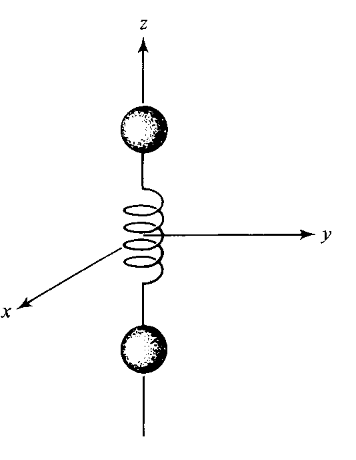

本文不是纯正的科学，其中幻想与科学混杂，请勿用于科学参考。对科学不感兴趣的诸位可以跳过第一部分的科学基础，直接进入脑洞阶段。
时空的涟漪——引力波
在我们这个宇宙中，时空并不平静，而是时刻泛着涟漪。二〇一五年九月，人类才第一次直接聆听到了涟漪的音乐。两个天体围绕对方相互转动，就是一种常见的引力波的源。 这次探测到的，是两个黑洞从双星到融合的过程中所释放的引力波。
为什么会有引力波呢？因为不仅仅质量会产生引力，引力本身也可以产生引力，离开了源的引力波自己依然可以再产生下一处的引力波，所以引力波才会往外传播。而引力波本身，可以理解为时空的“涟漪”：时空背景上的扰动，时空本身被拉长或者压缩。
然而，如果时空被压缩了，可是尺子也被压缩了，那么压缩跟不压缩有什么区别呢？我们可以探测到这样的时空的变化么？
这就回到了广义相对论的开始：爱因斯坦的（某个版本的）等价原理说，均匀引力场跟加速度的等效性。
爱因斯坦有一个电梯思想实验：在均匀引力作用下自由下落的电梯中的实验者，是没法区分电梯是在静止还是匀速运动还是自由下落的。这样的等效性是爱因斯坦发展广义相对论的一个出发点。
为什么非要说均匀引力场呢？设想一下我们日常生活中见到的引力场，地球的重力场。我们日常生活中感觉引力场其实是均匀的，在家里和在公司的引力场没什么区别，都是朝下。但是如果我们有一个工具，可以测量这些重力场的细微差别，只要足够灵敏，我们会发现这两个地方的重力场会指向不同的方向（虽然都是叫做指向地心）。这样的细微差别的存在，在自由落下的电梯中，会产生一个等效的力，这个力会在朝向地心的方向把东西拉长，而在与指向地心的方向垂直方向上把东西压扁。我们把这个等效作用叫做潮汐力。
这样的潮汐力在黑洞周围是很强大的，这也就是大家读过的宇航员掉进黑洞会变成意大利面，虽然我更喜欢北方的面条。
如果我们放一个四条边等边长的十字架，放在这样变化的不均匀引力场中，这四个点之间的相对位置会发生变化，有一条边上的点之间距离变远，另一条变长。
当然像地球这样的引力场是静态的，这个十字架并不会随着时间变化。
倘若换成有黑洞产生的引力波，就不一样了，这个十字架的长边和短边会不停的互换1，如果我们连接上了什么仪器，就会产生动力了。
除了这种天体物理过程产生的电磁波，我们需要探索一些更加方便地人工产生电磁波的方法。引力有一个非常显著的特性，就是跟几乎任何我们能想到的事物都有耦合2。
那么我们可不可以利用我们非常熟悉的电磁场来产生引力波呢？Gertsenshtein 在 1960 年的时候，发表论文，提出了一个利用磁场来产生引力波的物理过程3。这样的过程在天体物理过程中可能会有些比较显著的结果4，毕竟天体物理过程常常是高能量的。然而原则上来讲，如果我们可以产生足够的能量密度，例如使用激光，也可以自己制作出引力波，甚至可能在引力波中调制信息。
在进入引力波应用之前，我们还需要解决一个非常重要的问题，那就是引力波定向的问题。正如电磁波的应用一样，没有定向性的引力波的应用范围非常有限。引力波定向实际上跟电磁波定向一样简单，就是使用天线（阵列）。我们将引力波源按照需求排列，就可以制作不同的发射器，满足不同的需求。例如将简单的四极子引力波源在发射面上排成直线，并且调整好相位和偏振，就可能让引力波定向。
引力波的应用
引力波这样的黑暗力量可以用来做非常多的事情：提供能源、推进装置、武器、通信等等。
倘若能够提取引力波的能量，生活在引力波丰富强烈的天体环境周围的文明就可以充分利用天体物理过程来为我们的生活提供能源。上文提到的引力波的潮汐作用，就是一个可以被用来转化成机械能的效应。设想我们在一个十字型支架的四个端点安装传动装置，接上发电机，就可以发电了。哦，等等，为什么我们有了这么先进的引力波，还在转换成机械能发电？那接上压电陶瓷直接将机械能转换成电呢？或者我们用来摩擦生热，用来煮饭？
简单的引力波对物体的影响示意图。如果这个潮汐作用太过强烈，那施加在人身上的感觉真是酸爽。来源 Wikipedia
{kind=link}
然而问题是存在的，如果引力波振幅太弱，那么转换成功率非常有限。但是如果太强，那么人就死掉了。另外，强的引力辐射过程大多持续时间短，毕竟功率大了，而总能量有限5。
那我们只好想方设法在某些区域屏蔽引力波。方法可以是使用很厚的物质层，将引力波的能量损耗掉，或者是使用主动消除：在某个区域内产生相同振幅，但是相位和偏振恰到好处的引力波，用来抵消引力波的影响。
除了作为产生电能或者机械能的能源，引力波还有一个特别重要的特性，就是它本身携带动量，正如光子也有动量一样。因此我们可以利用引力波作为推进装置，如果我们能够产生定向的引力波的话。
有了这些技术，我们可以制造一艘“引力皇后号”。她通过设置引力波阵列发射定向的引力波，从而产生相反方向的推力，同时为了降低引力波泄漏带来的危害，飞船还专门配有能够产生与作为动力的引力波相位相反的保护装置。而面对危险的宇宙环境，飞船可以使用被动引力波雷达来扫描周围的环境，例如探测其它的引力波驱动的飞船。引力波通信装置可以确保通信可以传递地足够远。为了保护家园，飞船也应该配备有引力波武器，例如引力波炸弹、定向能引力波摧毁束以及引力波驱动的导弹
需要提到一个比较有趣的现象，理论上来讲，两个天体融合的过程中，由于这是一个非常复杂的过程，类似流体的自发的对称性的破坏会导致引力波辐射在某个方向强于与之相反的方向，这样就会在这个方向由引力波的净动量，从而将天体朝向另一个方向推出，即动量守恒。
为了更好地理解这个现象，我们先设想一个四极子源，例如一个在 z 轴上的两个质量振动，

引力波源四极子辐射示意图。Gravitation and Spacetime, Hans Ohanian, et al
引力波四极子辐射的角分布功率是这个形状的：
意思是说，在 x - y 平面上，引力辐射是各个方向相同的，然而，从这个平面往 z 轴方向的各个角度，引力辐射强度不同，有个分布，就是上面画的这样：在 x-y 平面最强，越往 z 轴方向越小。
这个过程非常理想，可是实际上的双黑洞系统，是一个非常复杂的过程。不会有这么好的对称性，因此引力辐射可能在 x-y 平面上没有这么好的对称性。那么问题来了，我们超某个方向发射的引力波比与这个方向相反的方向的发射的引力波更强，会发射什么？引力波是携带能量动量的，这时候两个合并中的天体就会被朝向相反方向踢一脚。
这样也会有一些动能可以供我们使用，如果我们可以提取的话。或者，我们可以直接用来做武器？控制天体被踢的方向，然后让天体撞向某个目标，甚至作为天体导弹，控制其飞向目的地。
经过这样一番想象，似乎引力波有着很光明的未来。然而，这样的想象中，是有很多自相矛盾的地方的。我们如果能够控制巨大的天体作为飞船的一部分，又何苦再利用引力波来推进？如果我们使用上个世纪 Gertsenshtein 理论上发现的通过电磁场（光子）产生引力波的方法来产生引力波，那我们已经可以直接使用光推进了。如此等等，各位就把这篇文章当作冷笑话来读吧。
致谢
感谢 ErbB4 与我多次讨论相关话题。
注释
-
引力最低阶的辐射就是四极矩，Birkhoff 定理禁止单极子辐射，线性近似的爱因斯坦场方程推导会发现没有偶极子辐射。 ↩
-
跟任何具有能量-动量的物体都有耦合。 ↩
-
Gertsenshtein, M. E. (1960). Wave Resonance of Light and Gravitational Waves. Journal of Experimental and Theoretical Physics, 14(1), 113. ↩
-
Ontario, W. (1989). Photoproduction of high-frequency gravitational radiation by galactic and extragalactic sources. Astronomy and Astrophysics, 208(1-2), 345–350. ↩
-
双中子星合并作为例子，在两颗星合并的末尾会有一个引力波辐射暴，在最后的时刻，引力波辐射掉的能量，占两颗中子星总质量的 1% 左右。再比如物体落入黑洞，大部分的引力波辐射能量是在物体从两倍黑洞视界的距离落入黑洞视界这个过程发出的，因为这时候物体的运动是相对论性的高速运动。 ↩